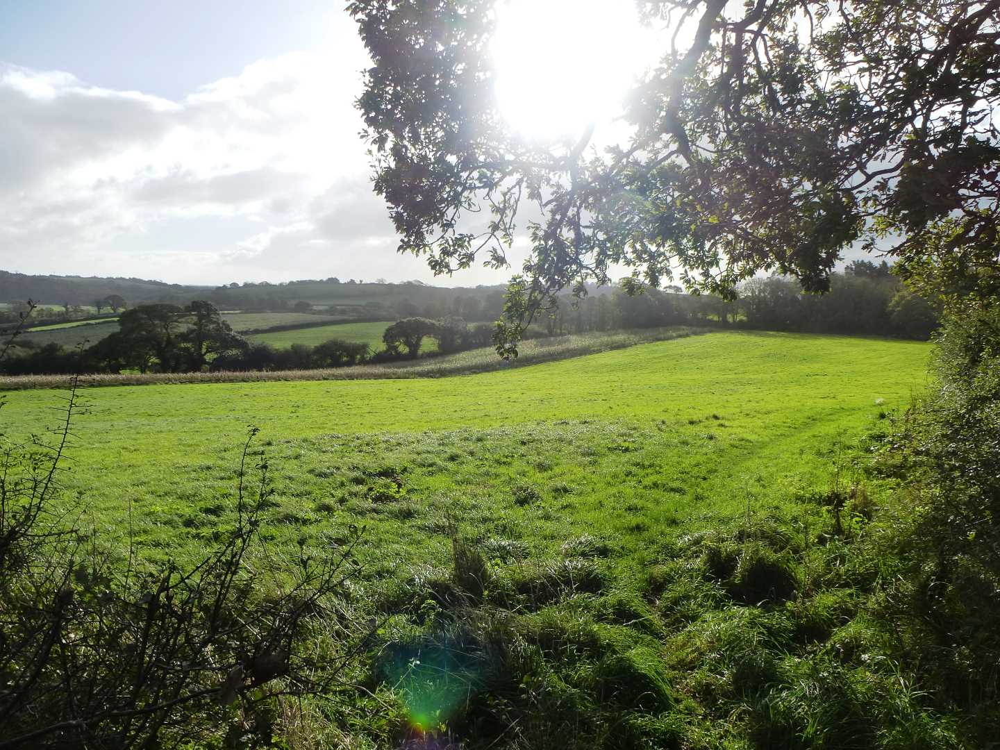
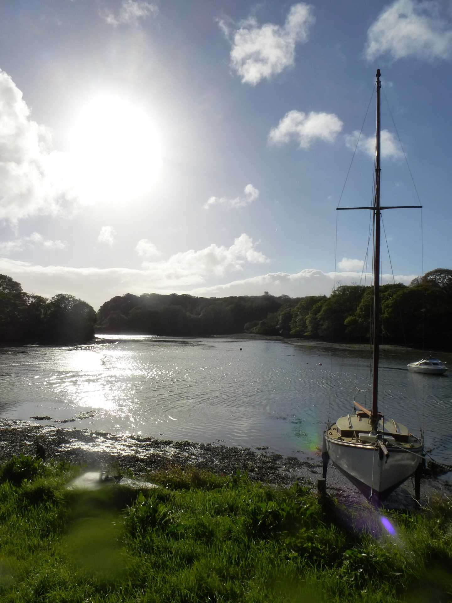

Start Ref: 835 414
End Ref: 835 414
Distance: 2.5 miles
Time: =1.5hrs
We started this walk on the road leading to Coombe (just outside of Truro) after leaving our car on the road verge outside the entrance to Lower Lanner Farm, and headed off North over the field to join the narrow road towards Old Kea Church.
From this field you can just make out the Church steeple at St. Michael Penkivel, as well as Malpas.
Passing the Church at Old Kea (well worth having a look around) you pass on to the head of Church Creek and then South (right) into the field, and take an immediate turn to your left up the field and along the path through the bracken. This path leads between small marker posts and between some lovely old Oak trees before going through the footpath gate.
Here, turn right to pass the thatched cottages, but not before stopping to admire the small cross in the hedge to our left.
Follow this wide track on to the road where we turn to the South East (left) and follow the road up and around until you pass the Unsuitable for Motors sign and the road becomes a bumpy track as it heads downhill. This road/track leads to what used to be Halwyn Tea Rooms with its lovely view towards King Harry Ferry and Tolverne Boat Yard.
The footpath goes in front of this quaint house and into the woods, as it goes over a stile and into the field behind.After a short walk you drop down out of this field and back into the trees as you follow, and receive occasional glimpses of, Roundwood Quay and Cowlands Creek.
This path leads you into the lovely hamlet of Coombe, where many of the houses sell their Kea Plum jams. At high tide the footpath leads you up in an ark around the houses and back down to the waters edge, but at other times you can, as I do, walk along the hard core track along the front, until this runs out and rejoins the footpath as it winds along the creek until you arrive at some (now) holiday cottages.
You can continue along into Cowlands, but here, I turn to my right and follow the road up and pass an Oak tree that has a wonderful hole in its trunk, and over the cattle grid to Lower Lanner Farm, and suddenly I am back at the car.